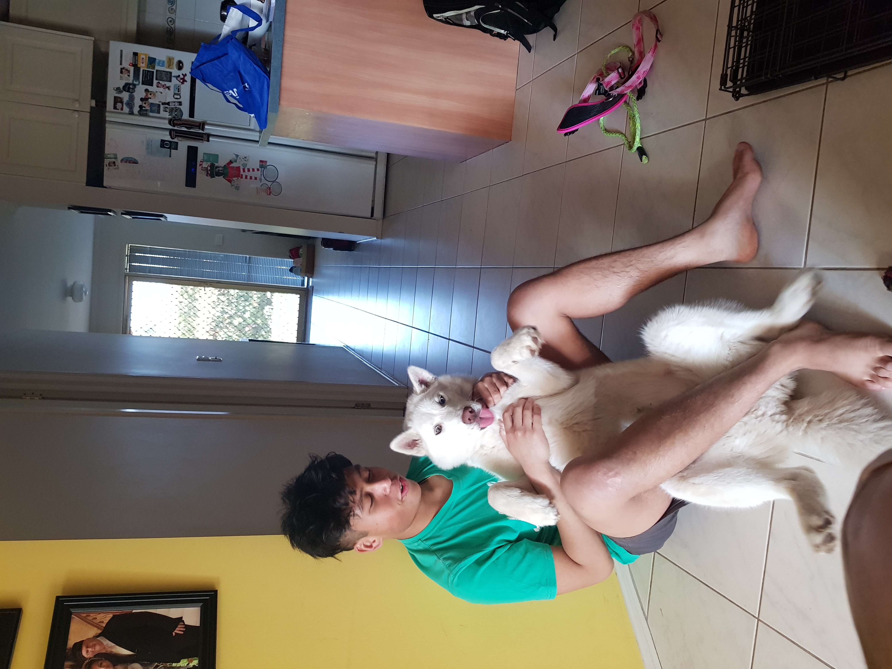

Hi, my name is Daffa Buckley, I am a student of RMIT University with student number S3716875 and email address s3716875@student.rmit.edu.au. I was born in Jakarta, Indonesia on the 20th of February 2000 and raised in Australia by my Australian father and Indonesian mother. I lived in Indonesia for the first 8 years of my life where I went to Fajar Hidaiyah for preschool to grade 2. My family then moved to Melbourne, Australia in 2008 where I proceeded to finish the rest of my primary school years in Courtenay Gardens. Upon graduating from Grade 6, I received a scholarship to go to Cranbourne Secondary College where I studied from Year 7 all the way till Year 12 where I was able to finish my VCE. I then decided to defer my first year of Uni after receiving an offer to do a Bachelor of Information Technology at RMIT to take a break from the rigorous studies of Year 12, to instead work and travel to Indonesia and Japan in my gap year.
As I have been raised in Indonesia and Australia, I have been exposed to both cultures, I am bilingual and therefore able to speak both Indonesian and English. As for something interesting about myself, during my downtime I love to watch sports like AFL, NBA, Soccer and anime like Naruto, One Piece and My Hero Academia. Because of the love and passion (close to obsession) I have for sports and anime. I have named all my pets after things from them such as my pet dog Jezza, derived from a Carlton Football Club great named Alex Jesaulenko and my other dog Korra from the anime “Legend of Korra”. If I am not watching those things, I consume my time by playing games, dedicating many hours of my life delving deep into the world of gaming, ranging from action packed MMORPG, FPS and MOBA to very chill games like Minecraft. Experiencing these games on many different consoles, from PSP to DS to PS4 to PC.
